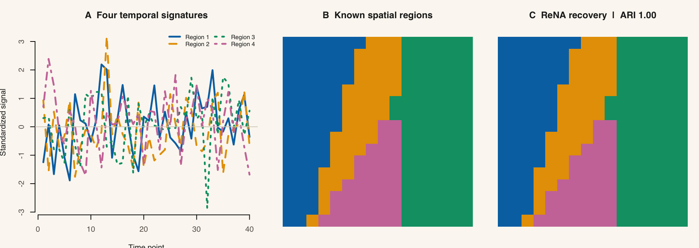

Getting started · Choose a method · Validate results · API map
neurocluster is an R package for turning masked 3D images and 4D neuroimaging series into spatially constrained parcels. Its cluster4d() front door runs several clustering families through one interface and returns one result contract: contiguous voxel labels, feature means, physical centroids, and mask and geometry provenance.
Use it to construct supervoxels or exploratory parcellations when both signal similarity and spatial organization matter.
Status: Development version
0.1.0, distributed from source. Interfaces and defaults may change as the package matures.
Install
The package is not currently distributed through CRAN. Install the development version from GitHub; its runtime dependencies are resolved from CRAN:
install.packages("remotes")
remotes::install_github("bbuchsbaum/neurocluster")Installation compiles C++ code, so it requires the usual R package build tools for your platform.
Quick start
This complete example generates data with known regions, clusters it with the deterministic ReNA backend, validates the returned object against its inputs, and checks recovery against the known partition.
library(neurocluster)
syn <- generate_synthetic_volume(
"gaussian_blobs",
dims = c(16, 16, 8),
n_clusters = 4,
n_time = 40,
noise_sd = 0.08,
seed = 42
)
fit <- cluster4d(
syn$vec,
syn$mask,
n_clusters = 4,
method = "rena"
)
audit <- validate_cluster4d(fit, syn$vec, syn$mask)
quality <- cluster_metrics(fit, truth = syn$truth)
list(
actual_k = fit$actual_k,
min_cluster_size = min(table(fit$labels)),
valid = audit$valid,
ari = round(quality$ari_truth, 3)
)
#> $actual_k
#> [1] 4
#>
#> $min_cluster_size
#> [1] 303
#>
#> $valid
#> [1] TRUE
#>
#> $ari
#> [1] 1The adjusted Rand index is available here because the synthetic fixture has ground truth; real neuroimaging data generally do not. validate_cluster4d() tests the structural and numerical result contract—it does not establish that a parcellation is scientifically meaningful.

The figure is rebuilt by tools/render-readme-figure.R from the same public workflow. Perfect agreement describes this deliberately separable synthetic fixture; it is not a benchmark or a claim about empirical neuroimaging data.
Read the result
Every unified method returns the same core fields:
| Field | Meaning |
|---|---|
labels |
Contiguous positive labels in included-mask voxel order |
actual_k |
Number of clusters actually returned |
centers |
actual_k × time/features means in the original feature space |
coord_centers |
actual_k × 3 centroids in physical millimetres |
clusvol |
A neuroim2::ClusteredNeuroVol for plotting or export |
provenance |
Label mapping, feature summary, geometry, and mask contract |
cluster and n_clusters remain aliases for labels and actual_k. Prefer the explicit names in new code.
Choose a method
There is no universally superior clustering algorithm. The useful choice depends on the similarity model, topology, desired cluster-count policy, and computational scale. This table describes mechanisms and decision signals, not benchmark rankings.
method |
Mechanism | Consider it when… |
|---|---|---|
supervoxels |
Iterative feature and spatial heat-kernel reassignment | You want separate feature and coordinate bandwidths and optional gradient seeding |
snic |
Single-pass priority-queue region growing | You want a non-iterative spatial growth process |
slic |
Local Euclidean SLIC assignment and refinement | Local search and optional connected exact-K repair fit the data model |
corr_slic |
Correlation-aware SLIC using a compact embedding, with optional exact refinement | Correlation is the relevant temporal similarity and the series is long |
brs_slic |
Sketched coarse SLIC followed by exact-correlation boundary refinement | You want to spend exact-correlation work mainly near parcel boundaries |
slice_msf |
Experimental DCT/cosine minimum-spanning forest with optional consensus and z stitching | Explicit evaluation only; it is not currently recommended for production use |
flash3d |
Low-DCT temporal hashing and 3D jump-flood propagation | A compressed temporal signature is appropriate and hash length is a useful control |
g3s |
Low-gradient seeds and multi-source geodesic propagation on the masked grid | Grid connectivity and a feature/spatial path objective should drive the parcels |
rena |
Recursive 1-nearest-neighbor graph agglomeration | You want deterministic, topology-constrained aggregation and exact K when feasible |
rena_plus |
Reciprocal-neighbor coarsening followed by spatial Ward refinement | You want an edge-aware coarse-to-fine hierarchy with exact K |
mcl |
Sparse Markov flow expansion and inflation | Graph-flow communities are the model; choose natural-K search or request exact-K repair |
acsc |
Correlation block graph, Louvain communities, and optional boundary refinement | You need Pearson, Spearman, or robust correlation with graph-community structure |
commute |
Physical k-nearest-neighbor graph, commute-time embedding, and k-means | A spectral graph embedding is appropriate for a data size that permits dense eigendecomposition |
Slice-MSF status. Earlier reliability weighting could collapse distinct features to zero-distance edges, and its former exact-K repair could peel off singletons. Those paths have been rejected or replaced, and local package recertification passes at this source revision. Slice-MSF remains experimental while broader real-data validation and hosted release evidence are pending; the parameter suggester will not recommend it. If you are evaluating it explicitly, begin with vignette("slice-msf") and retain its natural/exact-K provenance.
Start with the method comparison, then use parameter guidance to translate a scientific goal into controls. Method-specific arguments belong in ...; unsupported common arguments are rejected rather than silently ignored.
Fit and boundaries
neurocluster is a good fit when the analysis unit is a finite positive mask over a neuroim2::NeuroVol or NeuroVec, and spatially coherent parcels are an intermediate representation for exploration or downstream modelling. A single-volume NeuroVol is accepted for 3D clustering.
Keep these boundaries visible:
-
n_clustersis a target. Readactual_k; exact K can be topologically infeasible, particularly on disconnected masks. - Cluster IDs are arbitrary identifiers, not ordered values or anatomical labels. Do not interpret their numeric order.
- Algorithms may standardize, compress, or embed features internally. Public
centersare nevertheless recomputed from final labels in the original input feature space. -
spatial_weight,connectivity,max_iterations, andparallelare method-capability dependent. The unified API fails closed on unsupported explicit settings. - A structurally valid result is not a validation of biological truth. Use held-out data, stability analysis, registered estimands, or external labels appropriate to the scientific question.
- Compare results only over the same included voxels and physical geometry.
compare_cluster4d()enforces that support and reports explicitly defined estimands.
Learning path
- Getting started — build, inspect, plot, and export a first result.
- Spatially constrained clustering — understand the feature-versus-space objective.
-
Evaluate Slice-MSF — run
vignette("slice-msf")to inspect the experimental similarity, exact-K, feasibility, and metadata contract. - Compare methods and choose parameters — make a method choice from evidence rather than labels such as “fast” or “best.”
- Objects and results — interpret labels, centers, coordinates, and provenance.
- Validate and compare — check contracts and use explicit comparison estimands.
- Visualize and export and end-to-end NIfTI export — move from result objects to figures and files.
- Method deep dives, performance and memory, and benchmark methodology — inspect mechanisms, scaling considerations, and the limits of performance claims.
- API overview — find unified and specialist entry points.
Development
For a source checkout, use devtools::load_all() for interactive development, devtools::test() for the test suite, and devtools::check() for package-level checks. Please report reproducible issues at bbuchsbaum/neurocluster.